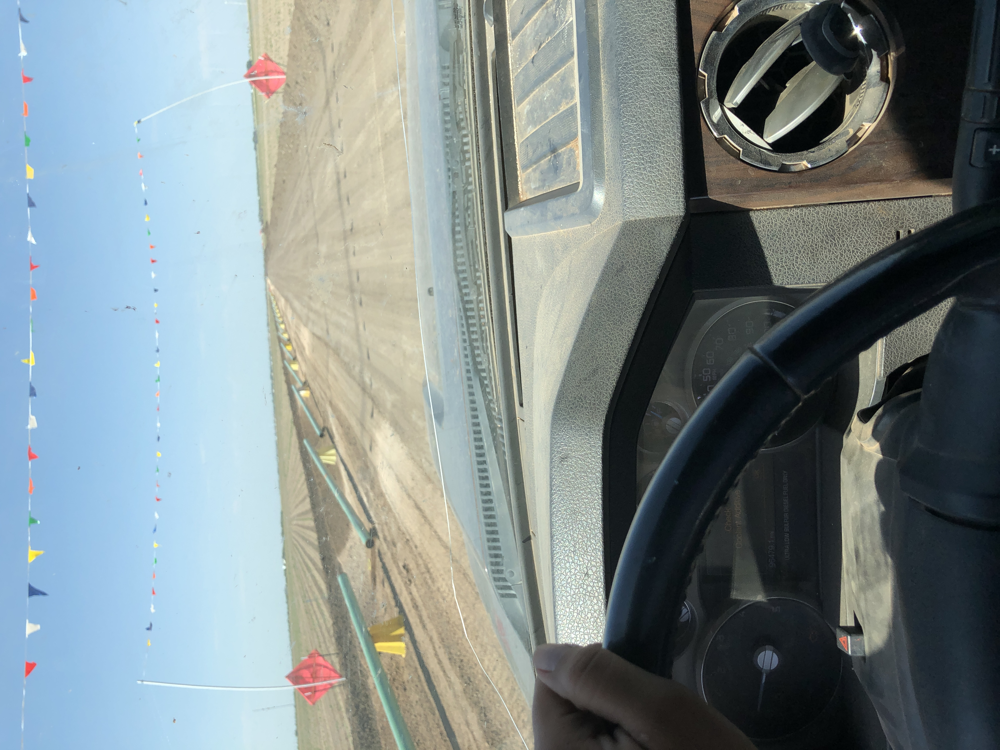

Current Projects
This website is one of my first web development projects. Through this portfolio I am learning HTML, semantic elements, website organization, and how to build professional webpages that represent my skills and experience.
Future Career Goals

My long-term goal is to build a successful career in cybersecurity. I am currently learning web development as a foundation for understanding how websites and computer systems work. As I continue my education, I plan to earn cybersecurity certifications and expand my knowledge of network security, ethical hacking, digital forensics, and system administration.My background in warehouse management, procurement, safety compliance, and industrial operations has taught me how important responsibility, attention to detail, and communication are in protecting people and organizations. I hope to combine these skills with technology to help companies protect their information and computer systems.